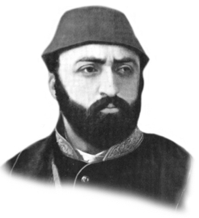

SULTAN ABDÜLAZİZ
Annesi : Pertevniyal Valide Sultan
Doğumu : 8 Şubat 1830
Vefatı : 4 Haziran 1876
Saltanatı : 1861 - 1876 (15 yıl)
Sultan Abdülaziz, İstanbul’da doğdu. Çok kuvvetli bir tahsil gören padişahın edebi kültürü de gayet genişti. Uzun boylu, yuvarlak yüzlü, kumral sakallı ve geniş omuzluydu. Vücudu pek iri ve heybetli idi. Cihan pehlivanları ile güreşebilecek kuvvete sahipti.
Aynı zamanda bestekâr, şair ve ressamdı. Memleketin imarı için birçok çalışmalar yapmıştır. Yaptırmış olduğu savaş gemilerinin planlarını çoğu zaman kendisi çizmiştir.
Devrinde olan önemli olaylardan bazıları: 1863’de Mısır ve 1867’de Avrupa seyahatlerine çıktı. 1868’de Şuray-ı Devlet kuruldu. 1869’da Süveyş Kanalı açıldı. 1871’de Mithat Paşa sadrazam oldu. Fakat iki ay sonra, bütçede açık olduğu halde açık olmadığını söyleyip yalanı meydana çıkınca, sadrazamlıktan azledildi. 1874’de Hüseyin Avni Paşa sadrazam oldu. Bir yıl sonra azledilince, bu kindar adamın kini padişaha karşı son haddine vardı. Abdülaziz çok büyük bir adam kıtlığı ile karşı karşıya bulunuyordu. Kime vazife vereceğini bilemiyordu. Hiçbir işe yaramadıkları alenen ortaya çıkmış olan Mithat Paşa, Mahmut Nedim ve Hüseyin Avni paşaların teşvikleriyle başlayan bir gösteriler ihtilâle döndü. Abdülaziz’i tahttan indirdiler. Tahttan indirmekle de kalmayarak intihar süsü verip zorla öldürdüler. Hâlbuki bu büyük padişah, zamanında Osmanlı Devleti’ni, askeri bakımdan dünyada ikinci veya üçüncü duruma getirmişti. Çok çalışkan, gayretli, dindar ve ilerisi için büyük ümitler taşıyan bu büyük hakan, şahsiyetleri çok düşük olan bazı siyasiler tarafından, tahttan indirilmesi devletin bu kritik günlerinde felâket oldu. Bütün mal varlığı çapulcular tarafından yağma edildi.
5 Haziran 1876 yılında şehit edildiği zaman kırk altı yaşında bulunuyordu. Cenazesi Divanyolu’ndaki Sultan Mahmut Türbesi’ne defnedildi.
Erkek çocukları: Selim Mehmet, Mahmut Celaleddin, Mehmet Şevket, Seyfeddin, Yusuf İzzeddin, Salahaddin, Abdülmecit.
Kız çocukları: Saliha, Emine, Nazime, Esma, Emine, Fatma, Münire.